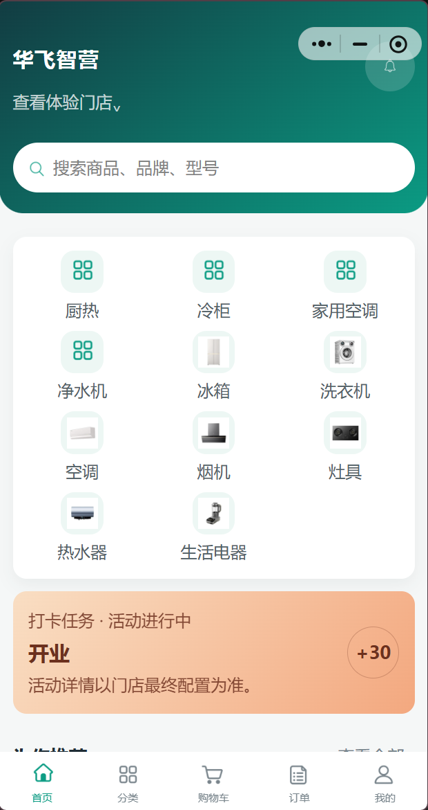
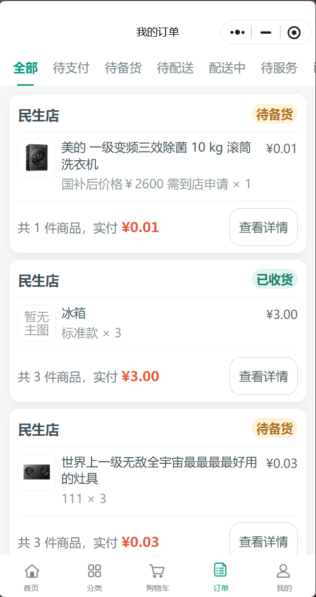
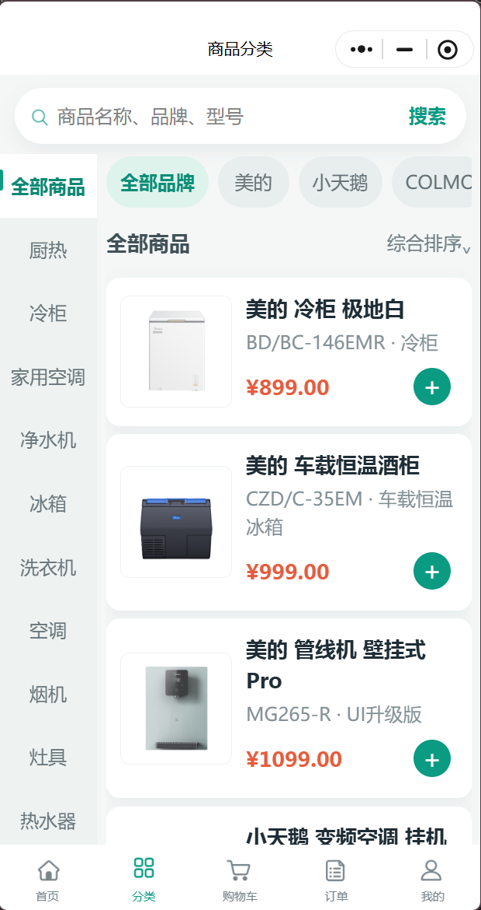
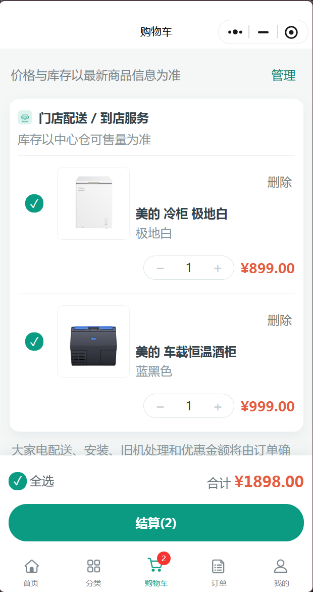
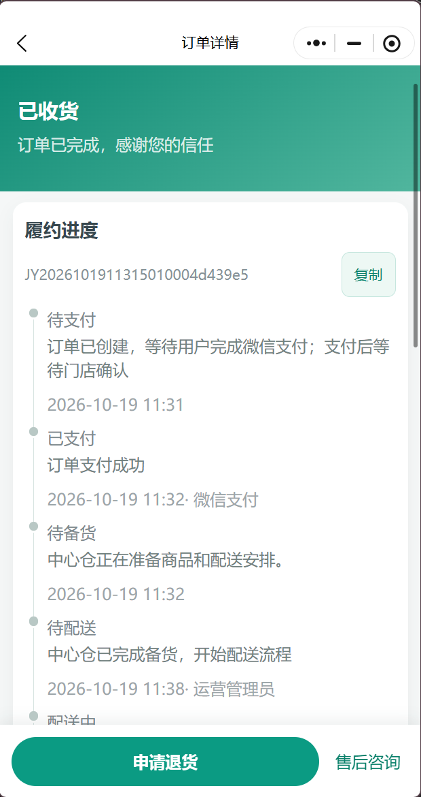
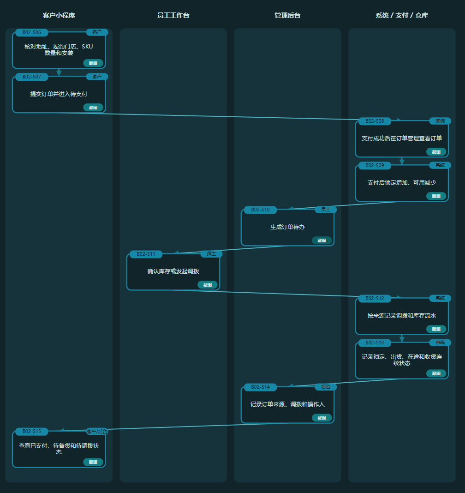
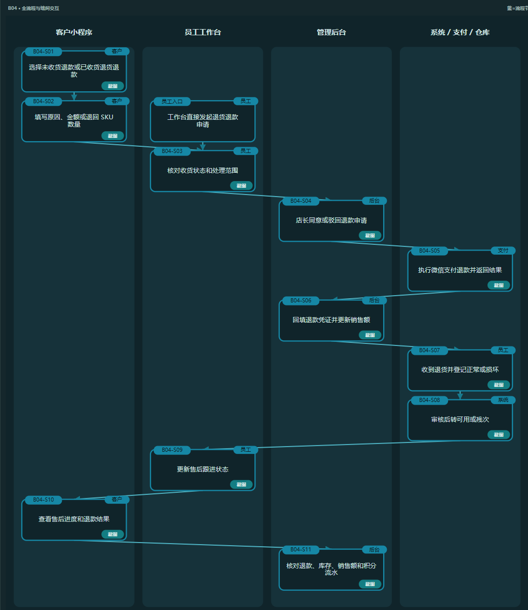
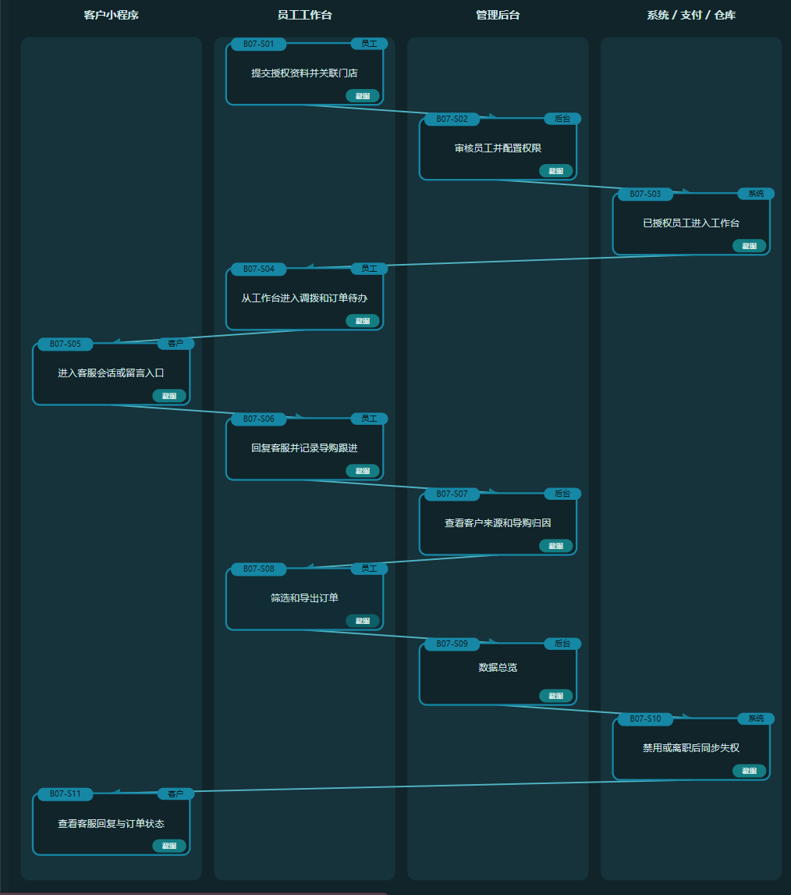

← 返回精选项目
CASE 003 / PROJECT ARCHIVE
华飞智营
本地家电零售产品：从商品选购，到订单流转、售后与多角色协同。
真实产品界面关键产品决策我的工作与成果


01 / CASE FILE
项目概览
让本地门店的距离、配送与上门服务，在用户做购买决定之前就被看见。
为本地多品牌家电零售场景设计选购和服务入口。本人独立负责产品与交互设计、业务流程与测试方案，协调外部团队开发实现。

02 / CASE FILE
从选购进入履约
01 / 品类优先，品牌辅助
以品类作为消费者的主要浏览路径，结合品牌、门店与本地服务信息支撑选购。
02 / 订单状态应当可理解
将库存确认、门店备货、配送与完成状态映射为客户端可查看的进度，而不只是后台内部字段。


03 / CASE FILE
跨端交易流程
保留四泳道的真实业务方案，展示客户端、员工工作台、后台及系统之间的职责切换。图片可点击放大查看节点。

04 / CASE FILE
退款与权限协同
异常处理不是简单返回一个退款结果：客户申请、员工核对、后台审核、支付结果及相关库存记录需要相互衔接。

员工授权、客服留言和后续跟进又形成另一套角色协同路径。

05 / CASE FILE
交付与验证
交付成果： PRD、高保真原型、跨端流程图、操作教程与测试用例；并对体验版开展走查与需求反馈。
退款测试从 693 项重复检查重构为按履约阶段组织的 11 个分支、40 笔订单场景，以业务链路代替大量交叉重复条目。体验版走查已形成多轮问题确认与截图反馈。
我负责产品与交互设计、业务流程、测试方案及体验版走查；研发实现由外部团队承担。截图为体验版测试场景。